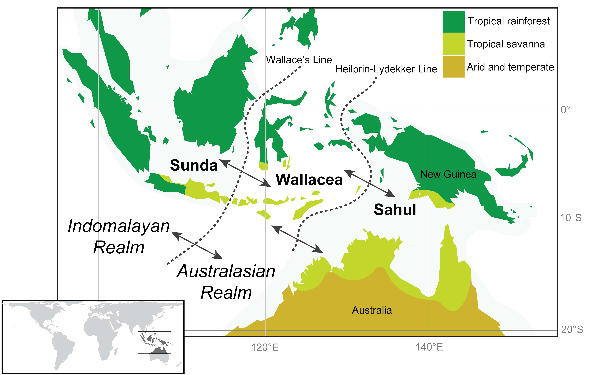
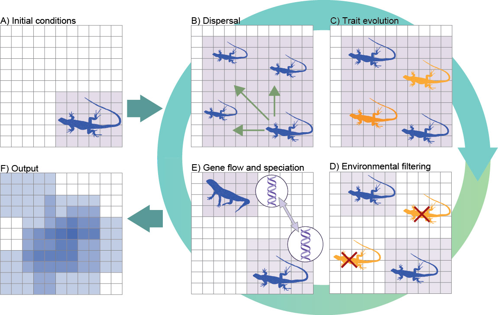
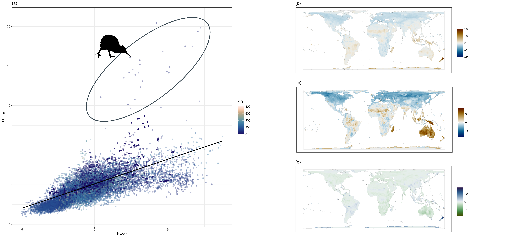
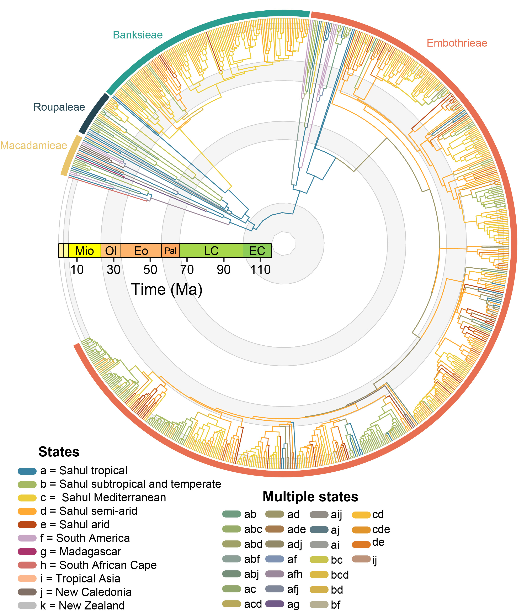

Current Research
Indo-Australian Biogeography

The Indo-Australian region is one of the most geologically and biologically complex areas on the planet and is shaped by the historical isolation of the Indian subcontinent and Sahul and dramatic biotic interchanges upon their more recent connections with Eurasia. I am deeply interested in understanding how these dynamic tectonic processes, alongside climatic change during the Cenozoic, have shaped the interchange of organisms in this region, shaping the diversity of different biomes from the equatorial rainforests of Borneo to the Australian arid zone.
Biodiversity Simulation Modelling

Simulation models allow us to experimentally manipulate the processes which shape diversification of lineages. They importantly allow us to link a complex array of ecological and evolutionary processes that are otherwise intractable to other classes of model.
I have been involved in developing new simulation tools (e.g., DREaD) and extending existing simulation frameworks to model novel processes (e.g., Gen3sis) in order to understand how fundamental processes such as the geographic mode of speciation, environmental niche evolution, and dispersal ability shape emergent biodiversity gradients.
My upcoming DECRA aims at extending this toolkit for biogeographers and evolutionary biologists – stay tuned!
Functional, Phylogenetic, and Geographic Endemism

Understanding why certain species are confined to particular places – and why some regions harbour concentrations of unique, range-restricted lineages – is a central question in biogeography. My work on endemism explores the ecological and evolutionary drivers of these patterns, from functional traits that characterise endemic species to the role of landscape connectivity in shaping endemism hotspots.
Phylogenetics and Evolutionary History of the Proteaceae

The Proteaceae are an iconic element of the Australian flora and they are widespread across the former Gondwanan southern continents and even into parts of tropical Asia. As part of my current research I have been inferring phylogenetic relationships in the large, globally distributed subfamily, Grevilleoideae.
Using phylogenomic data, we aim to untangle the causes of widespread discordance throughout the group and date divergences using a novel fossil dataset, in order to look at the group’s biogeographic and diversification history in the context of historical biome change.